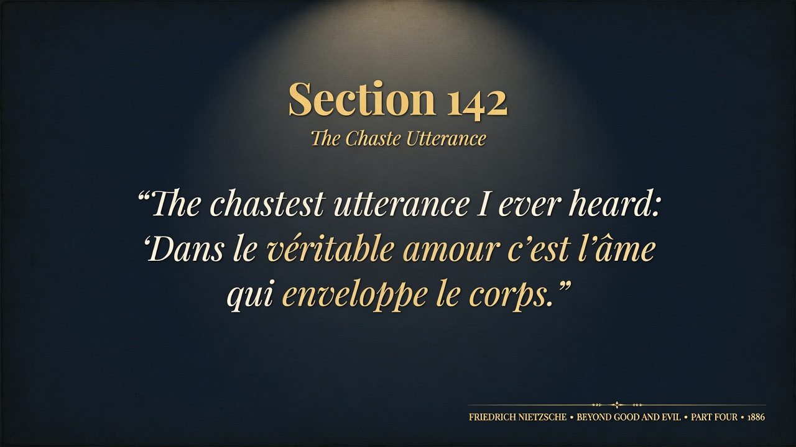
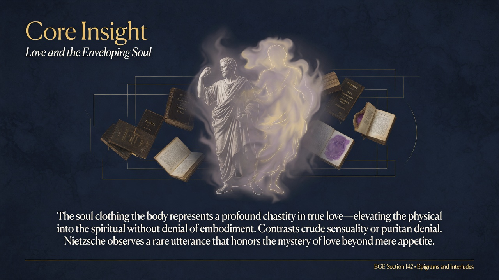
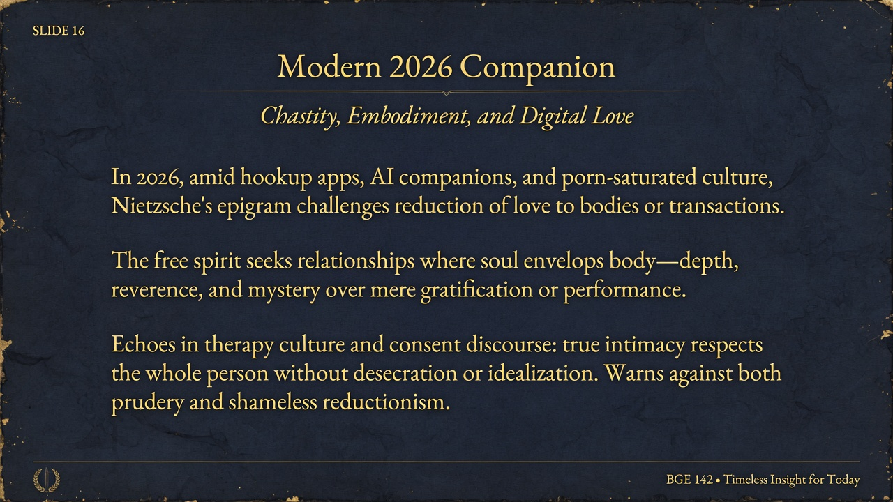

True love wraps the soul around the body, not the body consuming the soul. Chastity here means reverence, not repression. Real affection dignifies flesh instead of reducing someone to it.
Section 142 states: “The chastest utterance I ever heard: ‘Dans le véritable amour c’est l’âme qui enveloppe le corps.’”
Nietzsche records a French expression that captures a rare and elevated conception of love. In true love, it is not the body that claims or consumes the soul, but the soul that gently envelops and dignifies the body. The physical is not denied or transcended in crude ascetic fashion; it is clothed, protected, and given meaning by a higher spiritual regard. This is chastity not as repression but as a form of reverence that prevents reduction of the beloved to mere flesh or object of appetite.
The epigram stands in deliberate contrast to both puritanical denial of the body and the modern tendency to treat eros as nothing but physiological drive or social performance. By citing the saying as the chastest he has heard, Nietzsche signals approval for an attitude that preserves mystery and hierarchy within intimacy. The soul’s priority does not negate embodiment; it gives it grace and limits its tyranny.
Genuine love honors the body by subordinating it to the soul rather than letting appetite or vanity reduce the person to their physical aspect alone.
This fits Part Four’s series of psychological observations that puncture idealizations while refusing crude materialism. It aligns with Nietzsche’s broader critique of Christian asceticism and romantic sentimentality alike. The free spirit recognizes that healthy relations between sexes and individuals require neither denial of the body nor its deification in isolation. Similar tensions appear in his remarks on women, sensuality, and the dangers of both over-spiritualization and reduction.
In 2026, dating apps, OnlyFans economies, AI-generated companions, and hyper-sexualized media often treat bodies as interchangeable commodities or validation tokens. At the same time, certain wellness and therapy cultures promote disembodied “spiritual” connections that ignore physical reality. Nietzsche’s favored utterance offers a third path: an embodied chastity in which desire is real but framed by respect for the whole person. The free spirit cultivates relationships where the soul envelops the body—attention to character, vulnerability, and lasting regard rather than immediate gratification or performative authenticity. This protects against both the cynicism of pure transaction and the illusions of bodiless romance, anchoring intimacy in something that can endure scrutiny and time.


